Every project comes with its numbers, including the one that didn’t go to plan. Data from real campaigns is shown as counts only; dashboards use dummy data.
click a chapter to jump there
Aisyah Fajrin M. · Portfolio 2026About
Hello
Hi, I’m Ais.
I trained as a nutritionist and joined a Jakarta clinic network in October 2025. In twelve months I moved from nutrition coaching to operations to marketing, so I plan campaigns with the clinic floor in mind: what patients pay, what staff can explain, and what the data will show afterwards.
My first twelve months
Nutritionist Experience Partner
Oct – Dec 2025
Operations Coordinator
Jan – Jun 2026 · also Homecare marketing
Marketing Communication
Jul 2026 – now
What I do
Plan promos and campaigns, from pricing rules to flyers and staff briefings
Run the clinic Instagram: content pillars, carousels, captions, insights
Build evaluation dashboards and weekly reports for the CEO
promo transactions vs target in my best campaign, Sehat Merdeka
4 / 4
clinics passed their own target in that campaign
423
views on my best-performing feed carousel (myth-busting acupuncture)
4
dashboards and reports built for marketing, ops and the CEO
2
brand book versions from one source: internal and vendor
MC
at every in-house clinic health talk, and speaker at one
Jul – Oct 2026
Aisyah Fajrin M. · Portfolio 2026Chapter one
Chapter 01
Campaigns
Promos for a clinic network: vitamin shots, IV drips, flu season and specialist packages. Each one planned, briefed, tracked weekly and reported back.
01
Campaigns · Case studyAug – Sep 2026
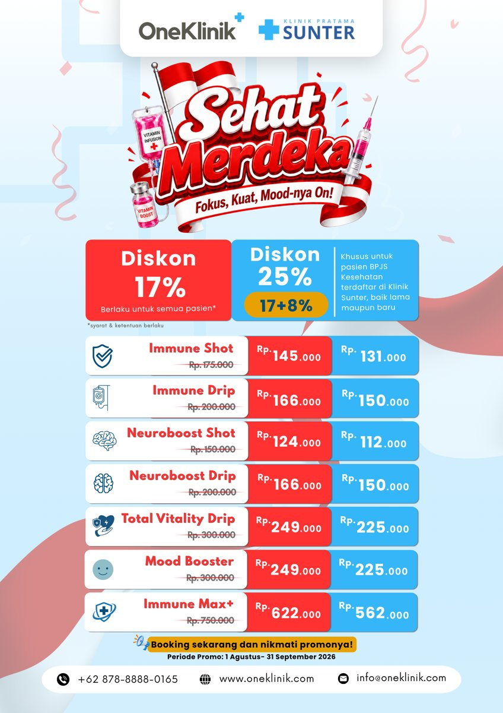
132% of target
Case 01 · Independence Day promo
Sehat Merdeka
Vitamin-B, stamina and mood boosters across four clinics, with a 17% discount for 17 August.
Challenge
Grow stamina and mood services, and bring more BPJS patients at the public clinic into preventive care.
What I did
Two-tier offer: a discount for everyone, plus an extra tier for BPJS patients
Flyers per clinic, online briefing, then an in-person roadshow
Weekly tracking against a pro-rated target
87/66
transactions vs target
4/4
clinics hit target
18 vs 4
BPJS patients used preventive care
Most errors came from discount input at the front desk, not from demand. Briefing the floor matters as much as the offer.
Campaigns · Evaluation, Wrapped editionOct 2026
Case 01 · how I reported it back
The final evaluation, as a Wrapped story
Clinic teams don’t read tables. So I turned the final report into a tap-through story they could open on their phones, like a year-in-review app.
Design choices
No ranking: small targets make percentages unfair
Every clinic gets its own award
“Guess first” cards to keep people tapping
What stayed in
The fixes: 5 transactions without the promo discount
One clear action per fix
A thank-you to the medical team
Original in Bahasa Indonesia, built for clinic staff. Partner clinic names replaced with “Klinik Korporat A, B, C”.
tap the phone to play it
Campaigns · Evaluation, Wrapped edition9 screens
Every screen
From “guess first” to thank you
Sent to all 4 clinics, 1 Oct
Audience
Doctors, nurses and front-desk staff at four clinics, reading on their phones between patients.
Format
Nine tap-through screens built as a web page, shared as one link in the clinic group chats.
Response
It became my standard for final recaps. The acupuncture and nutrition promo got its own Wrapped story too.
Campaigns · Case studyOct – Nov 2026 · running
Case 02 · flu-season bundles
Immune Season: the one that taught me most
Challenge
Launch a flu-season campaign on 1 October that protects margin and stays within finance’s cap on vaccine discounts.
What I did
Timed it to the rainy-season outlook
Every bundle included the flu vaccine, one discount rate per bundle
Flyers, medical guideline, briefings, app pricing and a tracker, all before launch
What happened
Redemptions came in far below plan, so I diagnosed each site instead of waiting for the end date.
What I found
At one site, insurance covers vaccines and vitamins on their own, but not as a bundle
Elsewhere, bundle prices sat far above what patients usually spend
Turned into rules for the next promo
Check how each site pays · price close to usual spend · never force a bundle. The year-end promo is being planned with these rules.
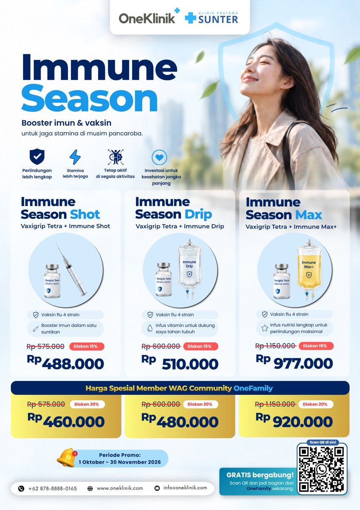
Campaigns · More casesJul – Dec 2026
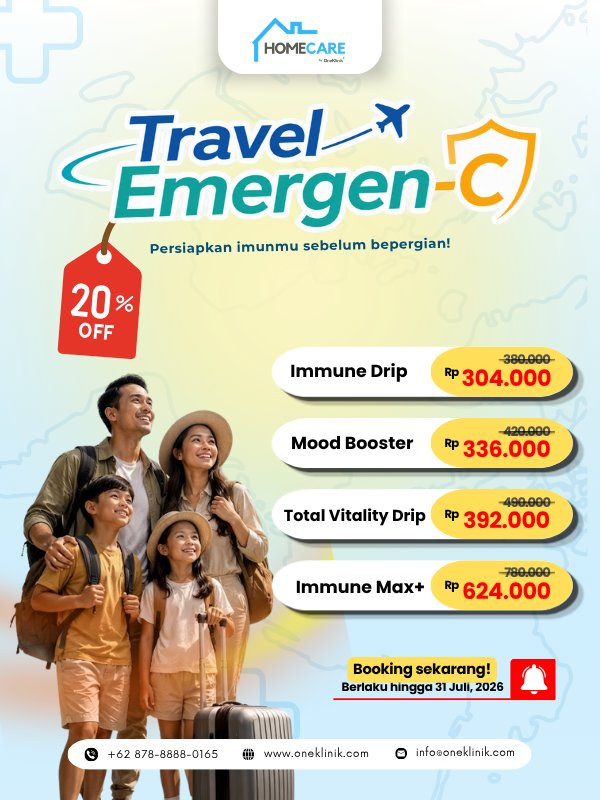
Case 03 · my first campaign
C+ Series: Travel Emergen-C
Immune boosters for holiday travel, across six units, in my first month as Marcomm.
Built a weekly evaluation with a pace-based target
Flagged a recurring discount error and proposed a cashier SOP
81%
of target (55/68)
3
units beat target
The premium IV had zero standalone demand, so next time I bundled it.
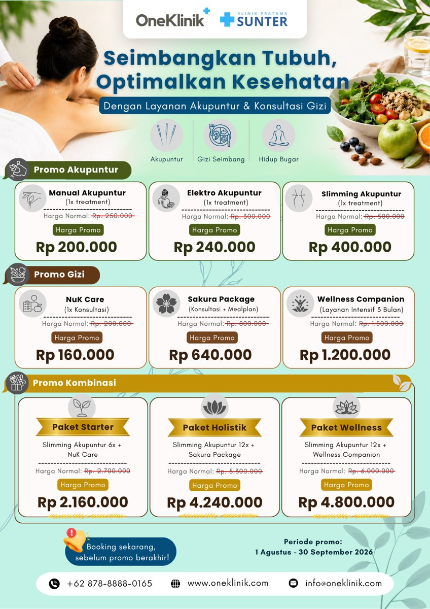
Case 04 · specialist packages
Acupuncture & Nutrition
Multi-visit packages at the public clinic, aligned with two doctors, finance and the clinic app.
Package pricing and new procedure codes
Monthly evaluation combining sales with Instagram insights
9/9
acupuncture visits, month 1
3–5×
story reach when doctors reposted
Reach isn’t conversion. Next: a clearer path from story to booking.
Case 05 · community
OneFamily Community
A free WhatsApp patient community that replaced a paid membership. Weekly broadcast, first-joiner reward, a logo per unit, and a tracker that blocks double claims.
Case 06 · new service
Homecare marketing
A two-offer Meta ads test: the winning ad was 32% cheaper per WhatsApp chat. Then I diagnosed why chats didn’t book: a trust gap, slow after-hours replies, no landing page.
Aisyah Fajrin M. · Portfolio 2026Chapter two
Chapter 02
Instagram content
The public clinic’s feed, @klinik_pratama_sunter: education carousels, trust posts and promos, all designed and written by me in Canva.
02
Instagram · Audience & insights22 Jul – 18 Oct 2026
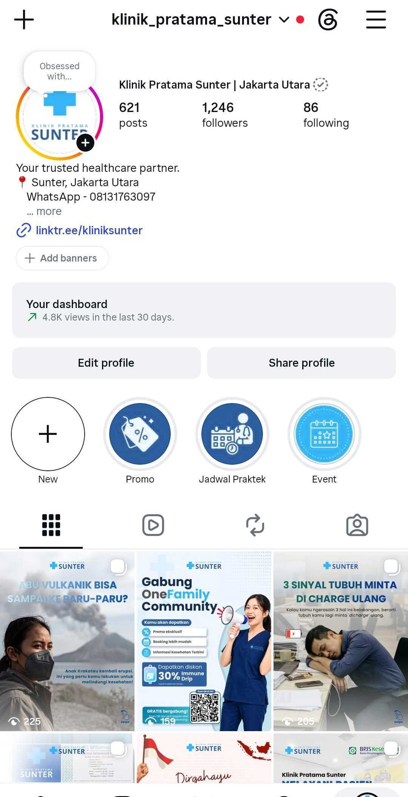
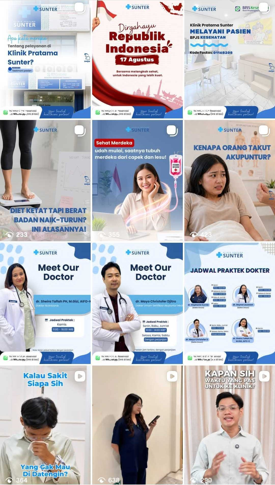
scroll inside the phone
Who we talk to
Women, 25–44, after work
Age range of followers
18–248.1%
25–3445.8%
35–4429.6%
45–549.3%
55+7.1%
65%
women
97%
in Indonesia
When they’re online
6–9 PM
Busiest on Tuesday, Sunday and Wednesday. I schedule feed posts for the evening.
Reach
4.8K
views, last 30 days
1,246
followers
Follower count stayed flat (+0.3%). This is a neighbourhood clinic, so I measured views and follows per post instead, and the most-followed posts were practical ones: doctor schedules and faces.
Source: Instagram Insights, custom range 22 Jul – 18 Oct 2026. Views: last 30 days as of 18 Oct.
The work around the campaigns: a brand book, a five-month plan, print materials, and a microphone at every health talk.
04
Brand, plans & stageOct 2026
Around the campaigns
Plans, a brand book, and a microphone
Strategy
Marketing Plan, Nov 2026 – Mar 2027
A five-month plan after the network refocused on corporate in-house clinics and homecare.
Three pillars ranked by impact, effort and dependency
Five promo design rules drawn from past results
Monthly timeline with KPIs on a Jan–Oct baseline
A plan is useful when it says what comes first.
Brand
Brand Book & Vendor Kit
A stiff draft rebuilt as an editorial web book, in two versions from one source.
Logo rules, colour palette, type system and tone of voice
Homecare guideline merged in
Internal book with audience profiles; vendor kit with a delivery checklist
Freelancers get the rules once and stop guessing.
Stage
Health Talks: MC & speaker
Partner companies book health talks for their employees. I host every one at our in-house clinics.
MC from opening to Q&A, with a cue card per session
Speaker at one: “Maintaining a Balanced Diet at Work and Beyond”
A good host makes the doctor’s message land.
Photos on the next two pages →
Brand, plans & stage · On stageAs a speaker · 2026
On stage · speaker
Talking food at work
A health talk for a partner company’s employees, where I was the speaker, not the host. My nutrition background, made practical for people who eat at their desks.
The session
“Maintaining a Balanced Diet at Work and Beyond”
Why a balanced diet matters for energy and focus at work
The impact of nutrition on productivity
Simple balanced-plate principles they can use the same day
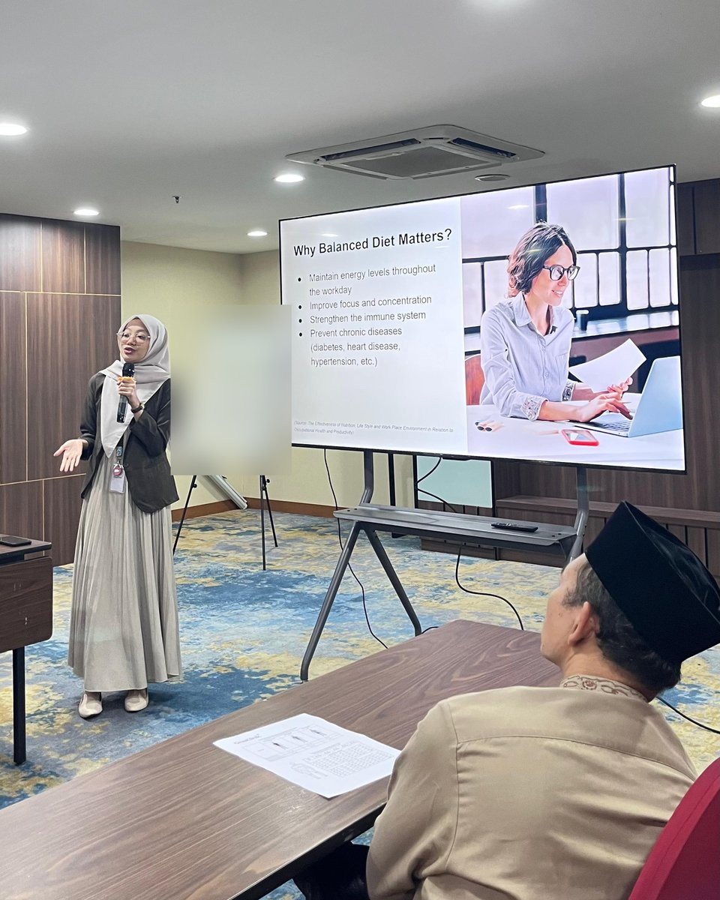
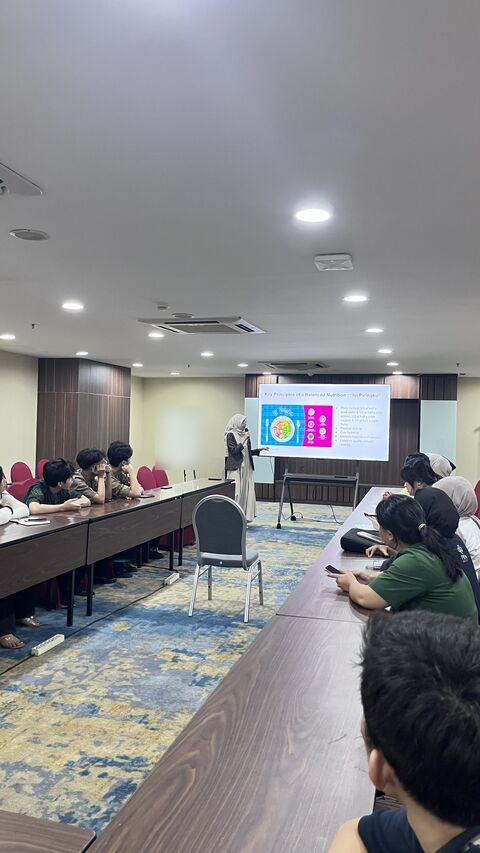
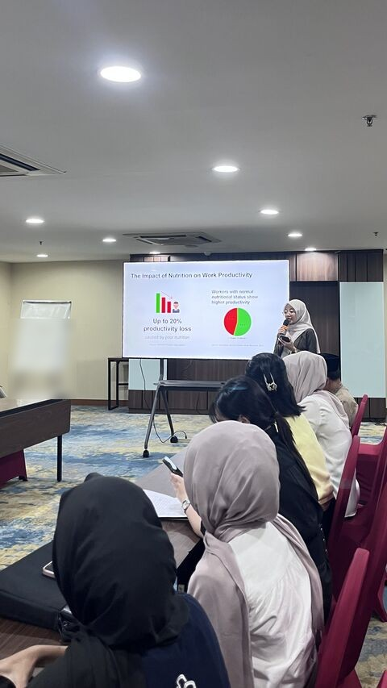
Speaker, not just MC
where the nutritionist and the marketer meet
Brand, plans & stage · On stageAs MC · 2026
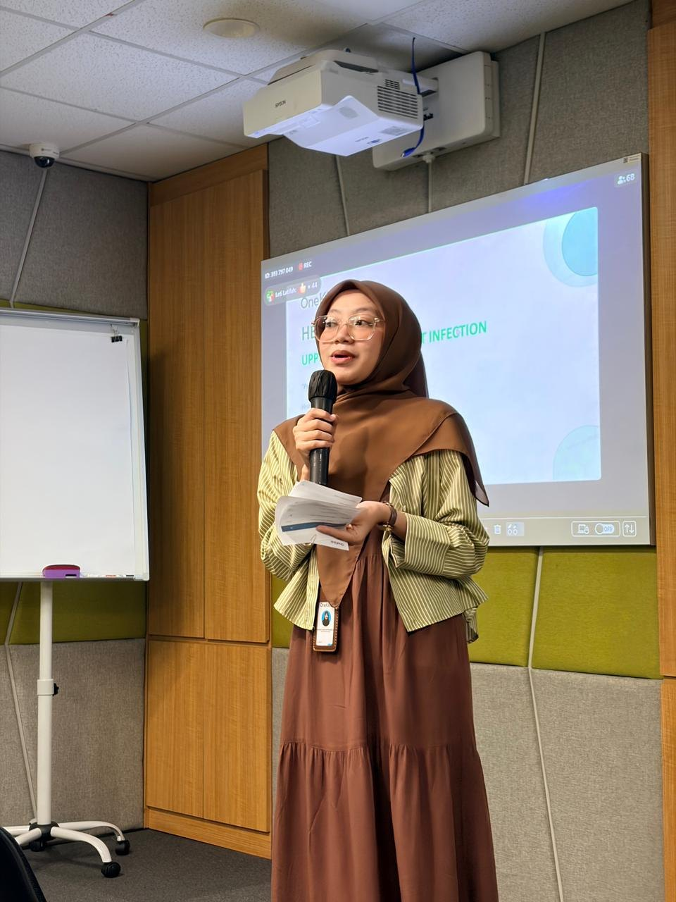
mic in hand
On stage · MC
The host of every health talk
Partner companies book health talks for their employees. I host every one at our in-house clinics, from the opening to the last question.
120
participants at one hybrid talk, most of them online
Every
in-house clinic health talk, hosted as MC
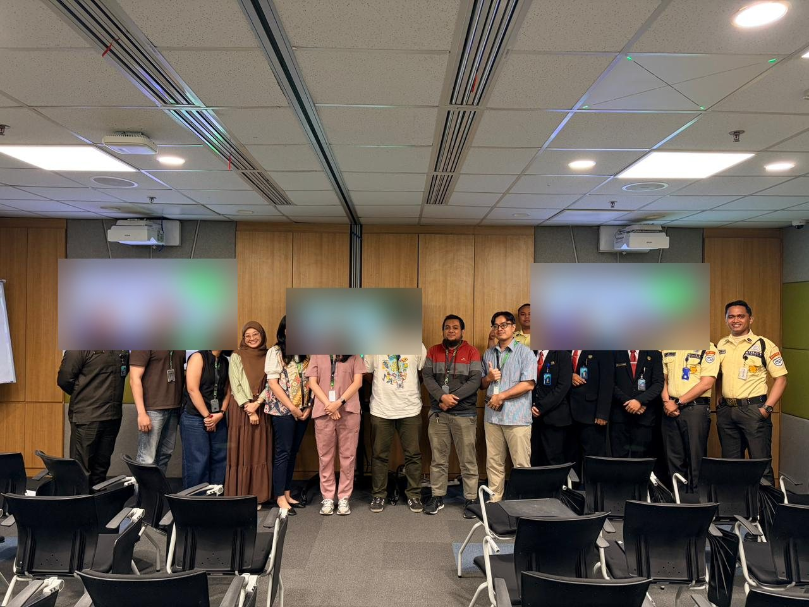
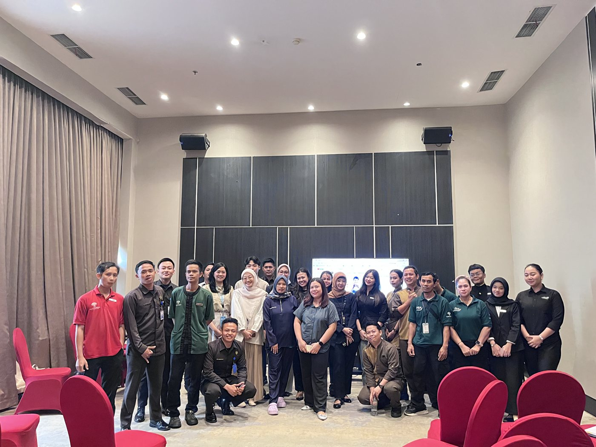
hybrid means two audiences at once: the room and the chat
Brand, plans & stage · PrintDesigned in Canva
Campaign visuals
One system, a version per clinic
Each campaign needs flyers that fit clinics with different prices and audiences. Public promo prices shown.
Aisyah Fajrin M. · Portfolio 2026The end
Thanks for reading
Let’s talk.
I’m happy to walk you through any campaign, dashboard or post in more detail.